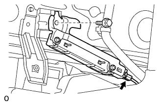
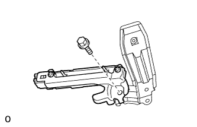
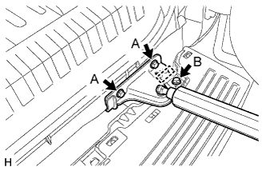
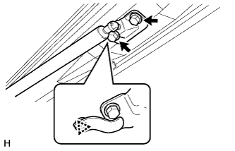

ГЕНЕРАТОР ЭЛЕКТРОННОГО КЛЮЧА (снаружи багажного отделения) > УСТАНОВКА |
| 1. УСТАНОВИТЕ АНТЕННУ ЭЛЕКТРОННОГО КЛЮЧА (для 5-дверных моделей) |
|  |
Установите антенну и закрепите ее болтом.
Подсоедините разъем.
| 2. УСТАНОВИТЕ АНТЕННУ ЭЛЕКТРОННОГО КЛЮЧА (для 3-дверных моделей) |
|  |
Установите антенну и закрепите ее болтом.
| 3. УСТАНОВИТЕ ЛЕВЫЙ БОКОВОЙ КРОНШТЕЙН КРЕПЛЕНИЯ ЗАДНЕГО БАМПЕРА (для 3-дверных моделей) |
Подсоедините разъем.
Установите боковой кронштейн крепления заднего бампера и закрепите его болтами.
| 4. УСТАНОВИТЕ ОБЛИЦОВКУ ЗАДНЕГО БАМПЕРА (для 3-дверных моделей) |
Для моделей с сенсорной системой помощи при парковке TOYOTA и противотуманными фарами:
Присоедините 4 разъема.
Для моделей с сенсорной системой помощи при парковке TOYOTA без противотуманных фар:
Подсоедините 2 разъема.
Для моделей без сенсорной системы помощи при парковке TOYOTA и с противотуманными фарами:
Подсоедините 2 разъема.
Введите в зацепление 10 захватов и установите накладку заднего бампера.
Заверните 7 болтов и введите в зацепление 2 фиксатора.
| 5. УСТАНОВИТЕ БРЫЗГОВИК ЛЕВОЙ ЗАДНЕЙ БОКОВОЙ ПАНЕЛИ (для 3-дверных моделей) |
Установите брызговик задней боковой панели и закрепите его 5 винтами и 2 фиксаторами.
| 6. УСТАНОВИТЕ БРЫЗГОВИК ПРАВОЙ ЗАДНЕЙ БОКОВОЙ ПАНЕЛИ (для 3-дверных моделей) |
| 7. УСТАНОВИТЕ ПЛАСТИНУ ЗАДНЕГО БАМПЕРА № 1 (для 3-дверных моделей) |
Введите в зацепление 10 захватов и 10 направляющих, чтобы установить пластину заднего бампера № 1.
| 8. УСТАНОВИТЕ ПЛАСТИНУ БУФЕРНОГО БРУСА ЗАДНЕГО БАМПЕРА (для 3-дверных моделей) |
Введите в зацепление 14 захватов, чтобы установить пластину буферного бруса заднего бампера.
| 9. УСТАНОВИТЕ ОГРАНИЧИТЕЛЬ ОТКРЫВАНИЯ ДВЕРИ БАГАЖНОГО ОТДЕЛЕНИЯ (для 3-дверных моделей) |
Со стороны бампера:
|  |
Установите ограничитель открывания двери багажного отделения с нижним кронштейном крепления амортизатора двери багажного отделения и закрепите его 2 болтами A.
Вверните болт B.
Закрепите жгут проводов.
Со стороны двери багажного отделения:
|  |
Присоедините фиксатор, чтобы установить ограничитель открывания двери багажного отделения с нижним кронштейном крепления амортизатора двери багажного отделения.
Вверните 2 болта.
| 10. УСТАНОВИТЕ КРЫШКУ ОТВЕРСТИЯ ЯЩИКА ДЛЯ ДОМКРАТА (для 3-дверных моделей) |
Введите в зацепление 2 захвата, чтобы установить крышку отверстия ящика для домкрата.